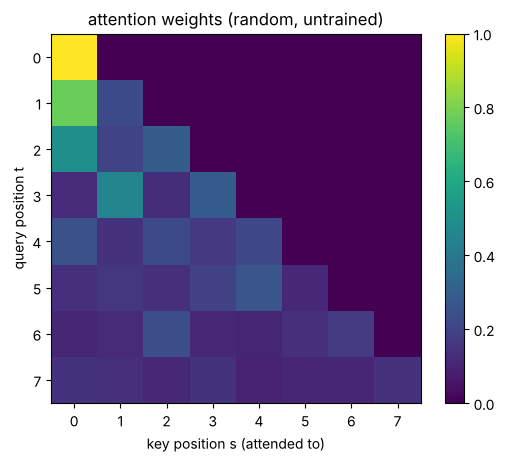
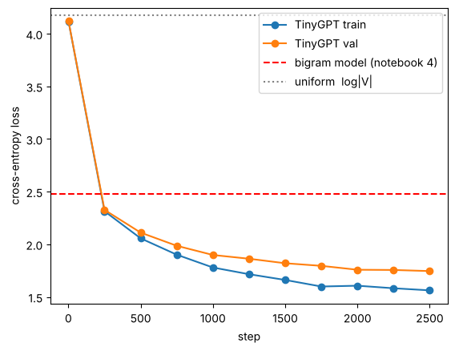
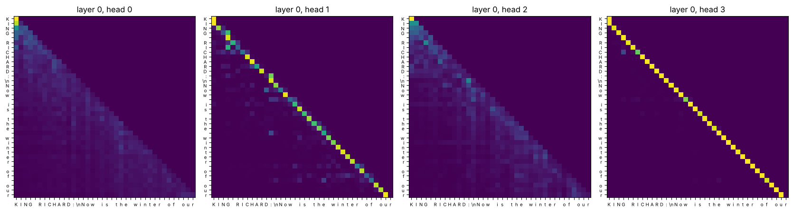

Behind the Secrets of LLMs, crash course part 2
The bigram model from notebook 4 only looked at one previous character and got stuck at a validation loss of about 2.5. In this notebook every position gets to look at all earlier positions through self-attention. We stack that into a Transformer and train a small GPT on Shakespeare.
We go step by step:
- what the training data of a language model looks like (a context and the next token)
- averaging over the past, written as a matrix multiplication
- scaled dot-product self-attention with a causal mask, and why we divide by
- multi-head attention, MLP, residual connections and LayerNorm, which together make a Transformer block
- training TinyGPT, generating text, and looking at its attention maps
Time: about 60 minutes. It runs on a CPU with small settings (about 3 minutes of training). On a Colab GPU it is faster: Runtime > Change runtime type > T4 GPU, and the notebook picks bigger settings by itself.
import math, os, time, urllib.request
import torch
import torch.nn as nn
import torch.nn.functional as F
import matplotlib.pyplot as plt
torch.manual_seed(1337)
device = "cuda" if torch.cuda.is_available() else "cpu"
print("torch", torch.__version__, "| device:", device)
URL = "https://raw.githubusercontent.com/karpathy/char-rnn/master/data/tinyshakespeare/input.txt"
if not os.path.exists("input.txt"):
urllib.request.urlretrieve(URL, "input.txt")
text = open("input.txt", encoding="utf-8").read()
chars = sorted(set(text)); V = len(chars)
stoi = {c: i for i, c in enumerate(chars)}; itos = {i: c for c, i in stoi.items()}
encode = lambda s: [stoi[c] for c in s]
decode = lambda ids: "".join(itos[i] for i in ids)
data = torch.tensor(encode(text), dtype=torch.long)
n = int(0.9 * len(data))
train_data, val_data = data[:n], data[n:]
print(f"{len(text):,} characters, vocabulary |V| = {V}")torch 2.14.1+cu130 | device: cpu 1,115,394 characters, vocabulary |V| = 65
1. What does a language model train on?#
We cut random windows of block_size characters out of the text. The target is the same window moved one character to the right. So one window of length already holds training examples:
block_size = 8
x = train_data[:block_size]
y = train_data[1:block_size + 1]
for t in range(block_size):
print(f"context {decode(x[:t + 1].tolist())!r:>14} -> next {decode([y[t].item()])!r}")context 'F' -> next 'i' context 'Fi' -> next 'r' context 'Fir' -> next 's' context 'Firs' -> next 't' context 'First' -> next ' ' context 'First ' -> next 'C' context 'First C' -> next 'i' context 'First Ci' -> next 't'
def get_batch(split, batch_size, block_size):
d = train_data if split == "train" else val_data
ix = torch.randint(len(d) - block_size - 1, (batch_size,))
x = torch.stack([d[i:i + block_size] for i in ix])
y = torch.stack([d[i + 1:i + block_size + 1] for i in ix])
return x.to(device), y.to(device)
xb, yb = get_batch("train", 4, 8)
print("inputs x:", xb.shape, "\n", xb.cpu())
print("targets y:", yb.shape, "\n", yb.cpu())inputs x: torch.Size([4, 8])
tensor([[53, 59, 6, 1, 58, 56, 47, 40],
[49, 43, 43, 54, 1, 47, 58, 1],
[13, 52, 45, 43, 50, 53, 8, 0],
[ 1, 39, 1, 46, 53, 59, 57, 43]])
targets y: torch.Size([4, 8])
tensor([[59, 6, 1, 58, 56, 47, 40, 59],
[43, 43, 54, 1, 47, 58, 1, 58],
[52, 45, 43, 50, 53, 8, 0, 26],
[39, 1, 46, 53, 59, 57, 43, 0]])2. Letting tokens talk to each other: averaging the past#
The simplest way for token to use its context is to average the vectors of all tokens up to . It must not see the future, because the future is what it has to predict:
Written with a lower-triangular weight matrix , this is just . The same also comes out of a softmax over a masked score matrix: scores of in the future turn into a weight of 0.
B, T, C = 1, 5, 2
x = torch.randn(B, T, C)
# version 1: python loop
xbow1 = torch.zeros_like(x)
for t in range(T):
xbow1[:, t] = x[:, :t + 1].mean(dim=1)
# version 2: matrix multiplication with a row-normalised lower-triangular matrix
W = torch.tril(torch.ones(T, T))
W = W / W.sum(dim=1, keepdim=True)
xbow2 = W @ x
# version 3: softmax over masked scores (all scores 0 here -> uniform weights)
scores = torch.zeros(T, T).masked_fill(torch.tril(torch.ones(T, T)) == 0, float("-inf"))
W3 = F.softmax(scores, dim=-1)
xbow3 = W3 @ x
print(W3)
print("loop == matmul == softmax:", torch.allclose(xbow1, xbow2), torch.allclose(xbow2, xbow3))tensor([[1.0000, 0.0000, 0.0000, 0.0000, 0.0000],
[0.5000, 0.5000, 0.0000, 0.0000, 0.0000],
[0.3333, 0.3333, 0.3333, 0.0000, 0.0000],
[0.2500, 0.2500, 0.2500, 0.2500, 0.0000],
[0.2000, 0.2000, 0.2000, 0.2000, 0.2000]])
loop == matmul == softmax: True TruePlain averaging treats every earlier token as equally important. Self-attention lets the weights depend on the data.
3. Scaled dot-product self-attention#
Every token makes three vectors from its embedding , each with its own learned linear map:
- a query : what am I looking for?
- a key : what do I have to offer?
- a value : what do I pass on if someone attends to me?
The score is large when what token is looking for matches what token has. is the causal mask.
torch.manual_seed(0)
B, T, C, head_size = 1, 8, 32, 16
x = torch.randn(B, T, C)
key = nn.Linear(C, head_size, bias=False)
query = nn.Linear(C, head_size, bias=False)
value = nn.Linear(C, head_size, bias=False)
k, q, v = key(x), query(x), value(x) # (B, T, head_size)
att = q @ k.transpose(-2, -1) / math.sqrt(head_size) # (B, T, T) similarity scores
att = att.masked_fill(torch.tril(torch.ones(T, T)) == 0, float("-inf"))
att = F.softmax(att, dim=-1) # each row sums to 1
out = att @ v # (B, T, head_size)
plt.imshow(att[0].detach(), cmap="viridis")
plt.xlabel("key position s (attended to)"); plt.ylabel("query position t")
plt.title("attention weights (random, untrained)"); plt.colorbar(); plt.show()
print("output shape:", out.shape)
output shape: torch.Size([1, 8, 16])
Why divide by ?
If the entries of and have mean 0 and variance 1, then has variance . Large scores push the softmax towards a one-hot vector, so every token would only look at one other token and the gradients would vanish. Dividing by brings the variance back to 1.
d = 64
q, k = torch.randn(1000, d), torch.randn(1000, d)
raw = (q * k).sum(dim=1)
print(f"var(q.k) = {raw.var():6.2f} (~ d = {d})")
print(f"var(q.k / sqrt d) = {(raw / math.sqrt(d)).var():6.2f} (~ 1)")
row = torch.randn(8, d) @ torch.randn(d) # 8 scores for one query
print("softmax without scaling:", F.softmax(row, dim=0).numpy().round(3))
print("softmax with scaling :", F.softmax(row / math.sqrt(d), dim=0).numpy().round(3))var(q.k) = 65.40 (~ d = 64) var(q.k / sqrt d) = 1.02 (~ 1) softmax without scaling: [0. 0. 1. 0. 0. 0. 0. 0.] softmax with scaling : [0.108 0.034 0.549 0.077 0.039 0.036 0.012 0.147]
4. From one head to a Transformer block#
- Multi-head attention. We run heads with side by side. Each head can look for something different, for example the previous vowel or the start of the line. Their outputs are glued together and projected.
- Feed-forward MLP. After the tokens have talked to each other, each token thinks on its own: .
- Residual connections and LayerNorm keep a deep stack trainable:
- Position embeddings. Attention on its own does not know the order of the tokens, so we add a learned vector for every position.
The whole model is: token embedding plus position embedding, then blocks, a final LayerNorm, and a linear layer that gives logits. The loss is the cross-entropy, exactly as in notebook 4.
class Head(nn.Module):
# one head of causal self-attention
def __init__(self, n_embd, head_size, block_size, dropout):
super().__init__()
self.key = nn.Linear(n_embd, head_size, bias=False)
self.query = nn.Linear(n_embd, head_size, bias=False)
self.value = nn.Linear(n_embd, head_size, bias=False)
self.register_buffer("tril", torch.tril(torch.ones(block_size, block_size)))
self.dropout = nn.Dropout(dropout)
self.last_att = None # kept for visualisation
def forward(self, x):
B, T, C = x.shape
k, q, v = self.key(x), self.query(x), self.value(x)
att = q @ k.transpose(-2, -1) / math.sqrt(k.shape[-1])
att = att.masked_fill(self.tril[:T, :T] == 0, float("-inf"))
att = F.softmax(att, dim=-1)
self.last_att = att.detach()
return self.dropout(att) @ v
class MultiHeadAttention(nn.Module):
def __init__(self, n_embd, n_head, block_size, dropout):
super().__init__()
self.heads = nn.ModuleList([Head(n_embd, n_embd // n_head, block_size, dropout) for _ in range(n_head)])
self.proj = nn.Linear(n_embd, n_embd)
self.dropout = nn.Dropout(dropout)
def forward(self, x):
out = torch.cat([h(x) for h in self.heads], dim=-1) # concatenate the heads
return self.dropout(self.proj(out))
class FeedForward(nn.Module):
def __init__(self, n_embd, dropout):
super().__init__()
self.net = nn.Sequential(nn.Linear(n_embd, 4 * n_embd), nn.GELU(),
nn.Linear(4 * n_embd, n_embd), nn.Dropout(dropout))
def forward(self, x):
return self.net(x)
class Block(nn.Module):
def __init__(self, n_embd, n_head, block_size, dropout):
super().__init__()
self.ln1, self.ln2 = nn.LayerNorm(n_embd), nn.LayerNorm(n_embd)
self.sa = MultiHeadAttention(n_embd, n_head, block_size, dropout)
self.ffwd = FeedForward(n_embd, dropout)
def forward(self, x):
x = x + self.sa(self.ln1(x)) # communicate
x = x + self.ffwd(self.ln2(x)) # compute
return x
class TinyGPT(nn.Module):
def __init__(self, V, block_size, n_embd, n_head, n_layer, dropout):
super().__init__()
self.block_size = block_size
self.tok_emb = nn.Embedding(V, n_embd)
self.pos_emb = nn.Embedding(block_size, n_embd)
self.blocks = nn.Sequential(*[Block(n_embd, n_head, block_size, dropout) for _ in range(n_layer)])
self.ln_f = nn.LayerNorm(n_embd)
self.lm_head = nn.Linear(n_embd, V)
def forward(self, idx, targets=None):
B, T = idx.shape
x = self.tok_emb(idx) + self.pos_emb(torch.arange(T, device=idx.device))
logits = self.lm_head(self.ln_f(self.blocks(x))) # (B, T, V)
loss = None
if targets is not None:
loss = F.cross_entropy(logits.view(B * T, -1), targets.view(B * T))
return logits, loss
@torch.no_grad()
def generate(self, idx, max_new_tokens, temperature=1.0):
for _ in range(max_new_tokens):
logits, _ = self(idx[:, -self.block_size:]) # never more than block_size
probs = F.softmax(logits[:, -1, :] / temperature, dim=-1)
idx = torch.cat([idx, torch.multinomial(probs, 1)], dim=1)
return idxSettings and a quick check
Before training, the model knows nothing, so its loss should be close to , the same as uniform guessing in notebook 4.
if device == "cuda": # Colab T4 / any GPU: ~2-3 minutes
cfg = dict(block_size=128, n_embd=192, n_head=6, n_layer=4, dropout=0.1,
batch_size=64, steps=3000, lr=1e-3, eval_interval=300)
else: # CPU: ~3 minutes, smaller model and context
cfg = dict(block_size=64, n_embd=64, n_head=4, n_layer=3, dropout=0.0,
batch_size=32, steps=2500, lr=2e-3, eval_interval=250)
model = TinyGPT(V, cfg["block_size"], cfg["n_embd"], cfg["n_head"], cfg["n_layer"], cfg["dropout"]).to(device)
print(f"{sum(p.numel() for p in model.parameters()) / 1e6:.2f} M parameters")
xb, yb = get_batch("train", cfg["batch_size"], cfg["block_size"])
_, loss = model(xb, yb)
print(f"loss at init {loss.item():.3f} vs log|V| = {math.log(V):.3f}")0.16 M parameters
loss at init 4.371 vs log|V| = 4.174
5. Training, with the same loop as for MNIST#
Forward pass, loss, zero_grad, backward, step. Every few hundred steps we also estimate the train and validation loss.
@torch.no_grad()
def estimate_loss(iters=30):
model.eval()
out = {}
for split in ["train", "val"]:
losses = [model(*get_batch(split, cfg["batch_size"], cfg["block_size"]))[1].item() for _ in range(iters)]
out[split] = sum(losses) / len(losses)
model.train()
return out
opt = torch.optim.AdamW(model.parameters(), lr=cfg["lr"])
log = {"step": [], "train": [], "val": []}
t0 = time.time()
for step in range(1, cfg["steps"] + 1):
xb, yb = get_batch("train", cfg["batch_size"], cfg["block_size"])
_, loss = model(xb, yb)
opt.zero_grad(set_to_none=True)
loss.backward()
opt.step()
if step % cfg["eval_interval"] == 0 or step == 1:
l = estimate_loss()
log["step"].append(step); log["train"].append(l["train"]); log["val"].append(l["val"])
print(f"step {step:5d} | train {l['train']:.3f} | val {l['val']:.3f} | {time.time() - t0:5.0f}s")step 1 | train 4.119 | val 4.121 | 1s
step 250 | train 2.314 | val 2.327 | 11s
step 500 | train 2.057 | val 2.111 | 41s
step 750 | train 1.901 | val 1.986 | 52s
step 1000 | train 1.780 | val 1.898 | 64s
step 1250 | train 1.716 | val 1.863 | 74s
step 1500 | train 1.661 | val 1.820 | 84s
step 1750 | train 1.599 | val 1.795 | 95s
step 2000 | train 1.607 | val 1.758 | 106s
step 2250 | train 1.582 | val 1.756 | 117s
step 2500 | train 1.562 | val 1.746 | 127s
plt.plot(log["step"], log["train"], "o-", label="TinyGPT train")
plt.plot(log["step"], log["val"], "o-", label="TinyGPT val")
plt.axhline(2.48, color="r", ls="--", label="bigram model (notebook 4)")
plt.axhline(math.log(V), color="gray", ls=":", label="uniform log|V|")
plt.xlabel("step"); plt.ylabel("cross-entropy loss"); plt.legend(); plt.show()
model.eval()
for prompt in ["\n", "ROMEO:\n"]:
idx = torch.tensor([encode(prompt)], device=device)
print("=" * 60)
print(decode(model.generate(idx, 400, temperature=0.8)[0].tolist()))============================================================
BUCKINGHAM: Thou trop'reach a advised to house keep, In thou confess and all desire, end them lady The liek wele the done: I have how, was if age; I will have I though wert as though the many master? Sritherd: What it doth the prince, who being to comport With his him, Good hear? what you see, my man, The dight is, pitition to the death: but the power as my son the chard, Should be so, thou disc ============================================================
ROMEO: Why, and I see that, I do thy revemal'd thus the preseiveded dive but and I am thee countronoud it telless people; And your word, for your seave breep we lord, With tumple to braw his purike an your honour, Phonest to corn the for in this all death, The soffeics over the bord and green To place,---no long'd which seap, I to Rome to deather thuman to Ere forgny I the cafford words. FLORD OF YORK:
Words, line breaks, speaker names and punctuation, all learned from raw characters with nothing but next-token prediction.
6. Looking inside: what do the heads attend to?#
Each head in the first layer produces a attention matrix. Every row is a query position, and the columns show where it looks.
prompt = "KING RICHARD:\nNow is the winter of our"
idx = torch.tensor([encode(prompt)], device=device)
with torch.no_grad():
model(idx)
layer = 0
heads = model.blocks[layer].sa.heads
fig, axes = plt.subplots(1, len(heads), figsize=(4.2 * len(heads), 4.5))
labels = [c if c != "\n" else "\\n" for c in prompt]
for h, ax in enumerate(axes):
ax.imshow(heads[h].last_att[0].cpu(), cmap="viridis")
ax.set_xticks(range(len(prompt))); ax.set_xticklabels(labels, fontsize=7)
ax.set_yticks(range(len(prompt))); ax.set_yticklabels(labels, fontsize=7)
ax.set_title(f"layer {layer}, head {h}")
plt.tight_layout(); plt.show()
You will usually see a head that looks at the current or the previous character (a sharp diagonal), and heads that spread their attention over the last few characters or back to the start of the word. Your maps will look a bit different every run. Nobody programmed these patterns. The model learned them because they lower the loss.
Exercises
- Remove the mask. Delete the
masked_fillline inHeadand train for 300 steps. The training loss drops a lot. Why is this cheating, and what happens when you generate text? - No positions. Remove
self.pos_emb(...)fromforward. How much worse is the validation loss? Why can't attention tell positions apart by itself? - Bigger. Double
n_embdandn_layer. Count the parameters, time one step, and compare the final validation loss. This is where the cluster helps, see below. - Context length. Train with
block_size=16and withblock_size=128. What can a model with a short context never learn? - One head or many. Use
n_head=1with the samen_embd. Compare the loss and the attention maps.
Running it on the cluster
The same model is in hpc_lab/04_tinygpt/train_tinygpt.py. On an A100 or H100 you can train a model ten times bigger in the same time:
cd hpc_lab/04_tinygpt && mkdir -p logs
sbatch train.sbatch --n-layer 6 --n-head 6 --n-embd 384 --block-size 256